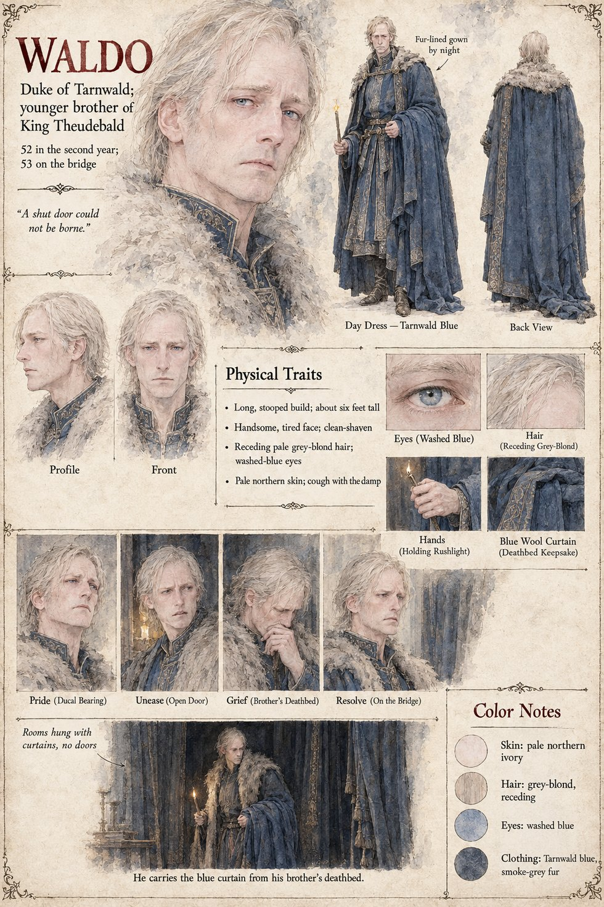

Waldo
Duke of Tarnwald · younger brother of King Theudebald · 52 in the second year, 53 on the bridge
The Duke of Tarnwald, younger brother of King Theudebald, whom the other pages name only by his title; his name is the one his nurse's sheet gives (Nurse of Waldo), and his own sheet confirms it. It draws a long, stooped man of about six feet with a handsome, tired, clean-shaven face, receding pale grey-blond hair, washed-blue eyes, pale northern skin and a cough that comes with the damp. Its pull-quote, A shut door could not be borne, answers to Theudebald's page: on the twenty-first of Brayen the King sends for his brother, who has not entered his palace in six years and who stops at the door of the room and cannot come in, and a carpenter takes the door off its hinges and stands it in the corridor, where it remains eleven days. The King makes the brothers swear peace on the ninetieth blade, which lies on the coverlet between them. In the war he is the principal belligerent: the publication notes have him buy the first eighty-nine swords and march south with the Grey Lances, Hagen Brandt's company.
The sheet's closing scene is captioned He carries the blue curtain from his brother's deathbed, with the line Rooms hung with curtains, no doors: the Duke stands in a dark curtained room with a rushlight in one hand and a heavy blue curtain over his arm, and a close-up of the cloth is captioned Deathbed Keepsake. The other pages show him at one remove. At the Ordeal he stands in the porch behind the Duke's Pages, in a plain grey cloak and without a sword. His steward Odilo arranges for things to be done twice; his captain Gerold carries his order to the Low Forge; and on the Uncounted Day he passes through the gate toward the bridge, hears the great gate bar behind him, and says Open it. A boy of eleven polishes his eighty-eight swords every morning at Tarnhall (Boy with the Basin). His nurse bars him, at nine, in the infirmary for forty days of the sweating fever (Chapter 9); the pages do not say that this is why he cannot bear a shut door. Others of his household on file are Berthar and his two sons and Theodard of Lorrenne, his second cousin.
His expression panels run Pride (Ducal Bearing), Unease (Open Door), Grief (Brother's Deathbed) and Resolve (On the Bridge). Written from the sheet, from what the other Case 4181 pages already say, and from the character notes in the case's publication-prep file; the manuscript itself was not to hand. His age (52 in the second year, 53 on the bridge), his stooped build, the Tarnwald-blue day dress with smoke-grey fur, the fur-lined gown worn by night and the rushlight are the sheet's own.
“A shut door could not be borne.”
Appears In

Related Subjects


Related Records

At night in the armory at Tarnhall Waldo, Duke of Tarnwald walks the row alone, counting his eighty-eight identical swords, one hand not touching; the entrance has a curtain and no door.

In the bedchamber of the dying King Theudebald lies on four pillows with a sword on the coverlet between his hands and his daughter Adalgund's, the window open on the river; the door has been taken off its hinges by a carpenter and stands in the corridor, and in the empty frame the Duke, Waldo, sits on a stool looking at his brother while the Chancellor Ricbert and the Hierarch Rothari wait at the corridor's end.

At the crown of the bridge Higaide stands with a sword lowered in each hand and a stain on his sleeve that is not his own, while thirty-four unhorsed knights of Tarnwald sit along the parapet with their hands held out before them and the Grey Lances stand in a double line behind him; the Duke, Waldo, rides slowly toward him with a long blue curtain across his saddle-bow, and far down at the south head Adalgund waits with an oiled bundle in the crook of her arm.